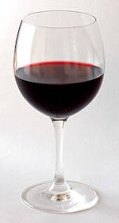
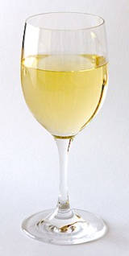
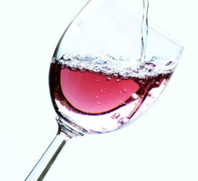
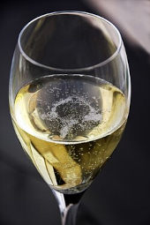
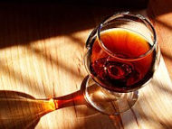

Melhores vinhos por tipo
Hoje nós iremos listar as melhores marcas de vinho por cada tipo: Vinho tinto, Vinho branco, Vinho rosé, Espumante e Vinho licoroso. Aqui vai uma breve explicação de cada tipo de vinho
Vinho Tinto
Vinho tinto é a bebida resultante da fermentação do suco ou mosto extraído de uvas pretas ou tintas no qual é imperativo que haja maceração das cascas no mosto com a finalidade de se atribuir cor e sabor à bebida.
A polpa da fruta, tanto da uva branca quanto da uva preta é clara, quando prensada esta polpa dá origem a um suco turvo considerado “branco”. A cor do vinho é obtida de acordo com a forma com que as cascas da uva são usadas. Para tornar o vinho tinto é preciso que as cascas das uvas pretas descansem no mosto, o que é chamado de maceração. A intensidade da cor no vinho tinto depende de dois fatores: primeiro, do tipo de uva empregada na sua fabricação; segundo, o tempo de maceração das cascas no mosto.
Vinho branco
O vinho branco é um vinho com coloração variando do mais pálido amarelo-esverdeado até o mais profundo dourado-âmbar. Ele é produzido não se permitindo que a casca das uvas fermente junto com o vinho, pois é a casca das uvas que confere a cor escura dos vinhos tintos.
O vinho branco provém principalmente de uvas "brancas", que são verdes ou amarelas, como a Chardonnay, Sauvignon e Riesling. Alguns vinhos brancos também são produzidos a partir de uvas tintas, desde que não sejam uvas tintureiras, porque essas têm a polpa e o suco vermelhos. A Pinot Noir, como tem a polpa "branca" — como a maioria das uvas tintas —, é comummente utilizada para produzir champanhe.
Vinho rosé
O vinho rosé ou rosado é um tipo de vinho que apresenta coloração rosada, intermediária entre os tintos e os brancos. Esta cor pode variar de um laranja pálido a um púrpura vívido, dependendo das uvas utilizadas e técnicas de fermentação. O rosé é resultante da fermentação do suco ou mosto extraído de uvas pretas ou tintas na qual há um curto contato das cascas com o mosto, com a finalidade de se atribuir um leve toque rosado de cor e sabor levemente tânico à bebida.
Espumante
Espumante (ou frisante) é um tipo vinho que tem nível significativo de dióxido de carbono, fazendo-o borbulhar quando servido. O Dióxido de carbono resulta de fermentação natural, seja ela feita dentro da garrafa (Método champenoise) ou fora dela (Método Charmat).
As borbulhas de CO2 que se formam durante o serviço são denominadas perlage. Em alguns lugares do mundo a palavra champagne é usada como sinônimo de espumante, o que é vedado inclusive por algumas legislações.
Vinho licoroso
Os vinhos licorosos são obtidos por fermentação a partir de bagos de uvas tintas ou brancas, diferentemente do licor, que é obtido sem fermentação. A sua vinificação assemelha-se à vinificação dos vinhos brancos, mas as suas características diferem. As uvas são mais ricas em açúcar do que o habitual.
Aguarde mais atualizações